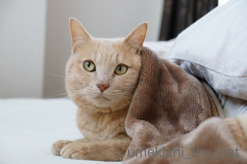
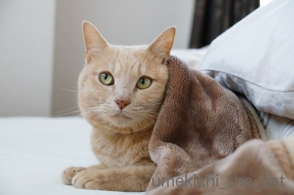

起こされるのは気に入らない [梅吉]
おっとは起きてきたのに梅吉が起きてこない。
寝室に様子を見にいくと・・・
心地よさげに毛布にくるまってます。
眠ってはいませんがぬくぬくを楽しんでいる様子。

うちはこういう時はキビシイですよ。
いつまでも片付けが進まないので毛布を剥ぎ取ります。
第一朝早く私を起こして自分だけ寝てるなんてーーーー！！！！(`o´)

毛布を剥ぎ取られてやさぐれるねこ(*>艸<)
自分が起こされるのは気に入らないですかw

ものすごく面白くなさそうです(≧▽≦)
ぷんすかって言葉がぴったり？
もそもそと目やにをつけたまま（笑）寝室を出て向かったのは

バスタブ。
お目目キラキラで遊ぶ気満々です (=ΦwΦ=)
バスタブに入っているところを物陰からのぞかれたり
のぞいている人間に飛びつくのが楽しくてしょうがないんですよ。

３歩あるいたらご機嫌が直っちゃうところが梅吉の良いところだよねー0(≧▽≦)0
梅吉のあごニキビ。
ニキビの黒いぶつぶつはたくさんあるんですが（毛穴の汚れみたいに見えます）
前回記事のようにかさぶたになってはいません。
消毒もぽんぽんぽんを守って気にしすぎないようにしています。
悪化しちゃう子はあごが腫れ上がる、とも聞きますが
梅吉の場合は今の所大丈夫なようです＾＾
 ↑ガブッと一押し↑
↑ガブッと一押し↑
2月２２日はにゃんこの日でした。
（猫飼いの方々は一年中にゃんこの日だと思いますけど(^_－)☆）
カメラ片手に街をさまよっていたてんてんさんが遭遇したのは
不思議なにゃんこの集会。
ここではスーパームーンもにゃんこ仕様だったのでしょうか。
マイクを持った白にゃんこ（チャーさん）が歌うのは
もちろん『キャッツ』の『メモリー』ですよ＾＾
･゜ﾟ･*:.｡..｡.:*･゜ﾟ･*:.｡. .｡.:*･゜ﾟ･*･゜ﾟ･*:.｡..｡.:*･゜ﾟ･*:.｡..｡.:*･゜ﾟ･*
土曜日にフェルメール展に行ってきました。
２〜３時ごろを目指して行ったのですがこれが大正解！
会期始めというのもあったのかな？
入場まで行列、会場内は身動きも取れないほどを想像していたのですが
ごく普通の混み具合。
フェルメールの絵は２点ずつ３つの部屋に分けて展示されているので
広々としてとっても見やすかったです。
グッズ売り場は大行列でしたけどw
寝室に様子を見にいくと・・・
心地よさげに毛布にくるまってます。
眠ってはいませんがぬくぬくを楽しんでいる様子。

うちはこういう時はキビシイですよ。
いつまでも片付けが進まないので毛布を剥ぎ取ります。
第一朝早く私を起こして自分だけ寝てるなんてーーーー！！！！(`o´)

毛布を剥ぎ取られてやさぐれるねこ(*>艸<)
自分が起こされるのは気に入らないですかw

ものすごく面白くなさそうです(≧▽≦)
ぷんすかって言葉がぴったり？
もそもそと目やにをつけたまま（笑）寝室を出て向かったのは

バスタブ。
お目目キラキラで遊ぶ気満々です (=ΦwΦ=)
バスタブに入っているところを物陰からのぞかれたり
のぞいている人間に飛びつくのが楽しくてしょうがないんですよ。

３歩あるいたらご機嫌が直っちゃうところが梅吉の良いところだよねー0(≧▽≦)0
梅吉のあごニキビ。
ニキビの黒いぶつぶつはたくさんあるんですが（毛穴の汚れみたいに見えます）
前回記事のようにかさぶたになってはいません。
消毒もぽんぽんぽんを守って気にしすぎないようにしています。
悪化しちゃう子はあごが腫れ上がる、とも聞きますが
梅吉の場合は今の所大丈夫なようです＾＾
2月２２日はにゃんこの日でした。
（猫飼いの方々は一年中にゃんこの日だと思いますけど(^_－)☆）
カメラ片手に街をさまよっていたてんてんさんが遭遇したのは
不思議なにゃんこの集会。
ここではスーパームーンもにゃんこ仕様だったのでしょうか。
マイクを持った白にゃんこ（チャーさん）が歌うのは
もちろん『キャッツ』の『メモリー』ですよ＾＾
･゜ﾟ･*:.｡..｡.:*･゜ﾟ･*:.｡. .｡.:*･゜ﾟ･*･゜ﾟ･*:.｡..｡.:*･゜ﾟ･*:.｡..｡.:*･゜ﾟ･*
土曜日にフェルメール展に行ってきました。
２〜３時ごろを目指して行ったのですがこれが大正解！
会期始めというのもあったのかな？
入場まで行列、会場内は身動きも取れないほどを想像していたのですが
ごく普通の混み具合。
フェルメールの絵は２点ずつ３つの部屋に分けて展示されているので
広々としてとっても見やすかったです。
グッズ売り場は大行列でしたけどw

カフェオレ色の梅吉

梅吉 2023年8月10日 永眠


梅吉と出会った譲渡会

犬猫の理由なき殺処分ゼロ
妄想広告
UMEKICHI 光

爆発的に早い！
時々攻撃的！
Thanks to Mr.Boss365
爆発的に早い！
時々攻撃的！
Thanks to Mr.Boss365

なんやもー・・・
ってお目目が訴えてますね^^;
そんな姿もただただ「かわいい」としか思えません（笑）
あれ、フェルメールって１月までじゃなかったんでしたっけ？
あ、違った、そうか、関西会場か^^; 失礼しましたー
by Ja-Kou66 (2019-02-25 00:58)
梅吉さんのやさぐれ顔がかっこいい!と思ったらバスタブの中では子猫ちゃん顔になっちゃってる。ニキビ悪化しなくてよかったですね。
猫の日集会は何と言ってもお月様が素敵です。
by zombiekong (2019-02-25 01:10)
良い方向に進んだようで
良かったです＾＾
by ぽちの輔 (2019-02-25 06:49)
もう！もうちょっと寝かしてと言っているような表情ですね
by ニコニコファイト (2019-02-25 07:04)
毛布でぬくぬくのお顔から一転しての不満げな顔がーーー^m^
3歩歩けば忘れちゃうだなんて、梅吉君、いい性格ですねぇ。
実家のミイちゃんはなかなかしつこくて、怒られたりイヤなことがあると、しばらくいじけて、人に背を向けてるそうですよ(^_^;)
猫飼ってなくても、気分的には毎日が猫の日！
日々、猫を求めてさまよっておりまする。
でも、みんなで猫コーデ、楽しかったぁ。
by ChatBleu (2019-02-25 07:25)
そうそう、自分は何の遠慮もなく起こすくせに
自分が起こされるのは気に入らないんですよねぇ(⌒-⌒; )
まぁ、うちの場合は起きてくるとかみさんにべったりで
邪魔になるらしいので、起こすと私が怒られますが(*_*)
梅吉さんの顎ニキビ、酷くならないようで良かったです( ^ω^ )
by ニッキー (2019-02-25 07:43)
やさぐれにゃんこ♪
それも可愛い梅吉さん♪
バスタブに入ってお目目キラキラ(#^.^#)
こんなお顔されると
遊ばないわけにはいきませんね！
by きぃ (2019-02-25 07:50)
ぷんすか の梅吉 三歩歩くとご機嫌さん(^^)
まどろんだ毛布の時間も忘れ 元気いっぱいね
by チャー (2019-02-25 09:08)
梅吉さん、良くなってきているようで何よりです。
うちの子も1年くらい前あごにきびがあるのに気がつきましたが（黒いつぶつぶ）
病院では様子見と言われ、本猫も気にしていないようなので
何もしていないのですが、良くも悪くもならず経過しています。
先日の地震、ご実家は大丈夫だったでしょうか。
by 市丸 (2019-02-25 09:20)
朝、あったかい布団でいつまでもグズグズしたいのは
みんな一緒なんやねー(^_^;)
by よーちゃん (2019-02-25 09:59)
おはようございます。
ニャンズの二度寝は、確かに腹立たしいですが、猫様のお仕事です。
小生猫だと、機嫌が悪く？最近は、鳴き続けます。
寝室からバスタブ？行動としては間違っていない・・・
湯船に浸からなくても癒してくれる梅吉君のペロンチョですね。
ZEPETO！！ミュージカル？
何気に？スーパー梅吉君が見てますね（笑）！？(=^･ｪ･^=)
by Boss365 (2019-02-25 10:37)
梅吉さんのやさぐれ顔からの～バスタブペロンチョまでの切り替えの早さが
素敵すぎます(笑
人を起こしておきながら自分だけ寝る、さすが猫様のでございます。
以前、ソネブロのお友達のおうちの猫さんは、数センチの湯を張ったバスタブで
泳ぐのが大好きでした。もう虹の橋を渡られましたが・・・
猫って意外と水場が好きだと思います。
ZEPETOあ、梅吉ムーンですね♪ うちはタルちゃんのお腹ボヨンもタルムーンが
たびたび観測されましたが、あのタワーを廃棄してからはすっかり見れなくなりました。
by marimo (2019-02-25 11:55)
梅吉さんのやさぐれ顔、さいこ～♪
猫は表情が乏しいなんて誰が言った？！と思う一枚です(#^^#)
飽きるのも早いけど、ご機嫌がスグ直るのもお猫様の素晴らしいところですよね！
アゴにきび、通っている病院でも特に治療というのはなく、悪化しないよに清潔にしてあげてください、だけでした^^;
黒いツブツブはノミ取りコームが一番よく取れますよ。
あんまりガリガリやって肌を傷つけちゃダメなんですけどね。
by ゆきち (2019-02-25 12:43)
むりやりおこされた梅吉くん、いい顔してるな−
ふてくされてるなあ(笑)
そのブータレ顔にチュッチュしたくなるのはわたしだけだろうか(笑)
フェルメール展、大混雑じゃ無かったようで良かったです。
相方くんのお姉さんも大阪出張にあわせて２回目のフェルメール展行ってきたってLINEが来ました^^
東京会場では変えなかったグッズも手に入ったみたいです。
東京よりゆっくり見られたーって^^
by リュカ (2019-02-25 12:43)
朝はなかなか布団から出られないのは、自分も梅吉さんと一緒ですね。
でも、すっと機嫌が直るのはさすが梅吉さん！
自分は家を出るまでブスーッとしてるような気がしてます・・・(^_^;)
by kou (2019-02-25 14:28)
ふてくされた梅吉くんも凛々しくって素敵ですよ(*^^*)
バスタブの中で目がキラッキラ!!こんな目で見つめられたら・・・(*´ω｀*)
あごニキビ、黒い粒粒も早く取れるといいですね。
by palpal (2019-02-25 14:31)
梅吉さん、ぬくぬくとなんて気持ちよさそう＾＾
やさぐれ顔もつぼです＾m＾
バスタブで遊ぶ気満々！起きればいいこともあるのよね♪
あごニキビ、うちに以前いた猫にあったけど、汚れと思って何気なく取ってました。悪化しなくてよかった～＾＾
by sana (2019-02-25 17:22)
こんにちは。
別件ですが・・・
ジェフ・ベックとのジョイントライブは自慢で出来ます！！
ギタリスト対決！！観たかった。羨ましい。手を突っ込む梅吉君、良いぞー！！
「Concert for George」は２００２年開催・DVDになってます。
YouTubeでも細切れで存在しています！？(=^･ｪ･^=)
by Boss365 (2019-02-25 17:37)
ぬくぬくは、気持ちいいからニャ～（ﾟ□ﾟ）
by 英ちゃん (2019-02-25 18:46)
梅吉さん、毛布をはがされてふて腐れていますね！
目が訴えています(^^)
by ma2ma2 (2019-02-25 19:31)
寝ぼけ眼のやさぐれ（？）顔、ちょっと可愛そうだけれどいいですねー。
すぐに目を覚まして遊びモードに切り替わる梅吉さん、さすがです。
梅吉さんムーンの元の集会、たのしそうですね。^^)
by yes_hama (2019-02-25 22:18)
寝起きはねぇ
俺もメッチャ機嫌悪いもんなぁ（笑）
by (。・_・。)２ｋ (2019-02-25 23:25)
梅吉くん、やさぐれてる～ｗ
私も寝起き悪いからわかるよ～(*^-^*)
梅吉ムーンに優しく照らされた不思議なにゃんこの集会には
てんてんさんもびっくりしたかな？
メ～モリ～♪なんて歌われたら私うるうるしちゃう。
そうそう！・・・ちぃさんの天使、もう見ちゃったよ。
可愛いいたずら天使だね♪
by emi (2019-02-26 00:44)
やさぐれ猫の梅吉さん、不満げな顔が良いですね（この顔大好き）
ニキビからのカサブタ何事もなくて良かったです。
ぽんぽんぽんをお願いします（笑）
ミュージカルにスーパー梅吉さんも登場ですね。
ポスターにちぃさん、フェルメールくん完璧な仕上がりです（笑）
本日のコメント欄開けました。
ご存知でしたら宜しくです。
by kiki (2019-02-26 16:56)
梅吉さんは正直でいいな。
やさぐれた目つきが、私は好きです。最高＾＾
by riverwalk (2019-02-26 21:55)
ミュージカルのCATSって、そういえば
ねこの話でしたね(@^▽^@)。
梅吉さん似のお月様（笑）が照らす
都会の溜まり場、お洒落でいい雰囲気！
222の日はBSテレ東でねこの日特集を
していたけど期待した程２４時間猫尽し
でなくてちょっと残念でした。１日中
ねこを眺められる生活っていいなあ～。
by うりくま (2019-02-27 00:22)
Ja-Kou66さん＞
すんごい目で語ってますよね(*>艸<)
梅吉はあまりふてくされた顔をしないので
貴重な写真となりましたー＾＾
大阪でもいよいよ始まりました！フェルメール展！
五月初旬までやってます。
会期始めってそんなに混まないのかな。
早めに行ってよかったです。
zombiekongさん＞
やさぐれることはほとんどないので画像をPCに取り込んで
「やったー！」と思いましたよー0(≧▽≦)0
撮影している時、実はこの表情には気づいてませんでしたw
ニキビは今の所小康状態です。
またなるんだろうな、くらいに構えてます！
梅吉ムーンは月をガブケリしている図にしたかったんですが
無理でした(⌒-⌒;
ぽちの輔さん＞
あごニキビ、今の所悪化はしていないです！やったー！
ニコニコファイトさん＞
言ってますね！「ほっといてんかー！」ですね！！
黙ってると1日起きてこないので起こしましたよw
ChatBleuさん＞
ミイちゃんは気高い猫さんなんですね！
梅吉は「３歩あるいたら忘れる」がほんと大袈裟でない性格なので
とっても扱いやすいです。
変わり身が早すぎてびっくりしちゃう事も。
嫌なことは秒速で忘れる生き方は見習わないとな、とも思いますw
動物お衣装＆小物、もっと欲しいですよね！他の動物にもなりたい。
ZEPETOのインスタを見ると皆さんクールさを競っているようで・・・
私たち、ZEPETOの意図するところとは違う方に全力で向かっている！？(*>艸<)
ニッキーさん＞
色々したいから寝ていて欲しい・・・と思うと起きてくるのも
猫様ですよねぇぇぇぇぇー。
４にゃんさんに付きまとわれると確かに何もできないw
ゴッドマザー様お疲れ様ですm(_ _)m
あごニキビは今のところ落ち着いています。
ニキビ予備軍はたくさんあるのでひどくならないように
気をつけていきます！
きぃさん＞
こんな顔しててもすぐご機嫌になるので
ほんと可愛いうちの子です（親バカw）
バスタブ＝追いかけっこはお約束なので
（私が）たくさん遊んでいただきました(*>艸<)
チャーさん＞
ほんと気持ちの切り替えが早すぎてwww
それでいいのかい？って思うこともありますが
見習わなきゃとも思ってます＾＾
市丸さん＞
あごニキビ、いずくも（笑）かゆくも無い様で
本にゃんは全然気にしてません。
後ろ足でかっちゃいて（笑）傷つけると悪化しちゃう様ですね。
今のところ新たなかさぶたは出来てないので
悪化はしていない様です＾＾
先日の地震はびっくりした様ですが被害はありませんでしたよー。
気にかけていただいてありがとうございますm(_ _)m
よーちゃん＞
私もグズグズしたいですー（涙）
寝ていると梅吉が許してくれません。
無視して寝ていると私のお腹の上あたりをスタート位置にして
リビングまで100本ダッシュになります(꒦ິ⌑꒦ີ)
Boss365さん＞
にゃんこの二度寝、微笑ましくもあり、ジェラシーもあり、でしょうかw
私がいつまでも寝ているとまず頭をていていし続ける。
（頭皮が痛いです）
私のお腹の上を起点にしてリビングまで100本ダッシュ。
（膀胱が破裂しそうです）
リビングで雄叫びをあげる。
（とてもやかましいです）
寝ていられる状況じゃないんですよねーwww
起きてご飯を食べるとバスタブのお湯を飲ませろー！
バスタブで遊ぶー、と要求の嵐・・・つくづく私は下僕なんだと思います (-_-メ)
ジェフ・ベック＆クラプトンのライブは自慢なんですよ！じ・ま・ん♡
「Concert for George」は探してちょこちょこ見てます＾＾
marimoさん＞
梅吉に「ええ！さっきのことはもういいんですか！！」
と聞くことがよくありますよw
切り替えの早さ、私も見習いたいです(⌒-⌒; )
バスタブ遊びを楽しむ猫さん、梅吉もお風呂の残り湯が少ない時は
こっそり楽しんでびしょびしょの足で家中を駆け回ります・・・
濡れた足が滑るのが楽しいらしい (-_-メ)
こっそり楽しんでないで一緒にお湯に浸かろうよーとの言葉は
ガン無視されてますwww
ゆきちさん＞
このぶんむくれ顔、
「猫は表情が乏しい」と言った学者（？）にメールで送りつけてやりたいです(*>艸<)
学会で発表してくれるかしらwww
あごニキビにはノミ取りコーム！了解です！！
ただ梅吉はブラシの選り好みが激しく今の所受け入れるのは
100均のクシだけなので使えるかどうかが怪しいです(-_-メ)
検討してみまーす＾＾
リュカさん＞
かわいいでしょ＾＾このブータレ顔0(≧▽≦)0
写真撮ってる時は気づいてなくてPCに取り込んでみて感動した！！
相方さんのお姉さま、グッドタイミングで大阪にいらしたのね。
大阪会場が始まったのは16日からだったかな。
思ったよりもずっと空いててびっくりしました・・・
これから卒業式が終わったりしたら混み始めるかなって思ってます。
kouさん＞
あら＾＾釣りの日だと飛び起きちゃう気がしますよ(^_－)☆
梅吉は気持ちの切り替えが早いので
寝起きもすぐご機嫌になりまーす(*>艸<)
palpalさん＞
ふてくされ顔、なかなか良い面構えでしょ＾＾
キラッキラお目目、誘うのが上手なんですよね・・・
とても断れませんwww
sanaさん＞
気持ち良さそうな姿を堪能してから毛布をはぎ取りました(*>艸<)
ぬくぬくのお布団に冷たい手をいれて
ちょっと意地悪なんかもしてwww
あごニキビ、黒いつぶつぶは取ろうと思ったらどんどん取れるんですよね・・・
獣医さんにくれぐれもそれだけはしない様に釘を刺されましたw
この人はそういうことするタイプだな、と読まれてたのかしら(⌒-⌒;
by ちぃ (2019-02-28 11:08)
英ちゃんさん＞
一緒にぬくぬくしたいんですが
「おきてはたらけw」と言われます(꒦ິ⌑꒦ີ)
私が家事する物音を聴きながらまどろむのが
すきなんでしょうねぇぇぇぇぇ〜（涙）
ma2ma2さん＞
もう散々寝坊しているんだから
そのふてくされ顔はないよねwと思いつつ(*>艸<)
文句ありげな顔も楽しかったです＾＾
yes_hamaさん＞
やさぐれ顔を見るために毛布を剥がす日々が続きそうです(*>艸<)
（嘘ですよ＾＾）
梅吉は寝つきも良いですが寝起きも良いんですよ！
起きたらすぐに走り回りますwww
2kさん＞
あら、寝起きはぶんむくれなんですね(*>艸<)
emiさん＞
梅吉といちごパジャマのemiさんが
ベッドの上でぶんむくれてるの想像しちゃった0(≧▽≦)0
リアルなニャンコの集会最近見てないなと
（近所の神社に行ったら見られるのよ＾＾）
ZEPETOニャンコの集会にしてみましたー。
ZEPETOの写真のサイズがまちまちなので
写真を重ねていくと消えちゃうニャンコが出たり・・・と
結構大変でした(⌒-⌒;
天使は素足で頑張りましたよ(^_－)☆
by ちぃ (2019-02-28 11:22)
kikiさん＞
最高に良いぶんむくれ顔です(*>艸<)
あまりこういう顔することはないので
（今の所）今年のベストショットです！！
ポスター調のフェルメールは会場入り口にあった
顔はめパネルです＾＾
見た瞬間「ZEPETOに使える！！と思いました。
今後、出先で顔はめパネル撮影は必須になりそうですw
riverwalkさん＞
すぐ顔に気持ちが出るのでわかりやすくて可愛いですよ(^_－)☆
そして、その顔がふてくされ顔だとしても褒めてもらえるなんて！
猫って良いですよね〜＾＾
うりくまさん＞
CATSを観たのはかなり前なんですが・・・
舞台にいるニャンコさん、目があうと（猫の様に）じーっと見つめてきて
（猫の様に）ぷいっと顔をそらしたりして・・・
芸が細いな、と感心しました(≧▽≦)
テレ東がそんな企画をしていましたか！
猫を飼っている人はそういう番組を見ると
「やっぱりうちの子が一番だよねー！」と
親バカ炸裂、のはずです(*>艸<)
猫を眺める生活は最高ですよー！！
by ちぃ (2019-02-28 11:38)